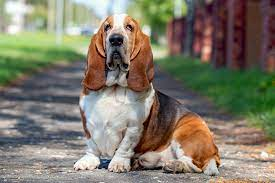

Overview
Among the most appealing of the AKC breeds, the endearing and instantly recognizable Basset Hound is a perennial favorite of dog lovers all over the world. This low-slung and low-key hound can be sometimes stubborn, but is always charming. The Basset Hound stands no higher than 14 inches at the shoulder but, with his remarkably heavy bone, powerful little legs, and massive paws, he possesses big-dog strength and stamina. Bassets are famous for a large, domed head that features extremely long, velvety ears, mournful eyes, and a wrinkled brow, which give the breed the look of a sad clown. Built more for endurance than speed, the Basset moves in a deliberate but effortless manner. The breed's scenting ability is uncanny; it's said that among dogs only the Bloodhound's nose is more accurate. Mild and agreeable at home, the Basset is stubborn on the trail and barks in a loud, ringing voice. Although they may not be wildly demonstrative in their affections, they are steadfastly loyal.
Characteristics
- Friendly and tolerant nature
- Intelligent and trainable
- The breed's scenting ability is uncanny
- Energetic and playful
- stubborn on the trail and barks in a loud, ringing voice
Care
Basset Hounds are generally good-natured and friendly but also independent and stubborn. They are very vocal and have a loud bark, especially when excited or frustrated. They have a short, smooth coat that requires little grooming, but they do shed a moderate amount. They have a droopy face, ears, and lips, and they drool. They are prone to skin rashes and ear infections. They require frequent bathing and ear cleaning. They are low-energy dogs, but despite their short legs and stumbling gait, they like to play. Their short legs are prone to arthritis. Basset Hounds have a strong sense of smell and can track food, people, and objects instinctively, to the point that they may wander if they are on a scent.